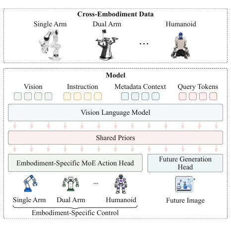
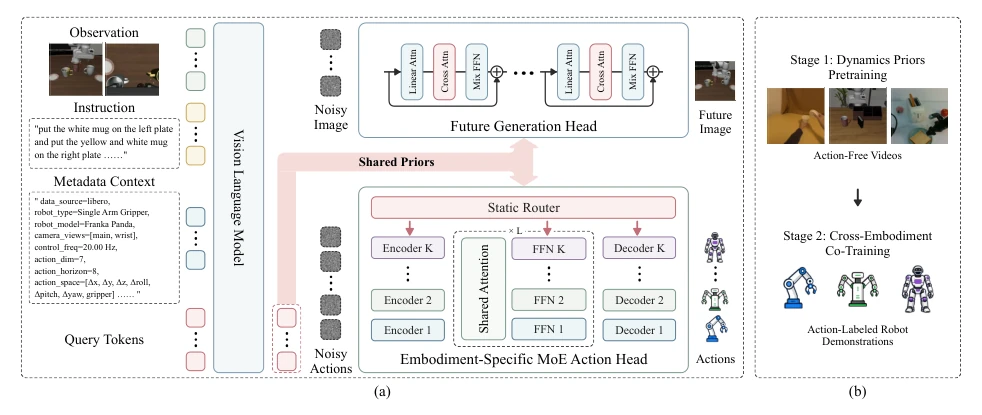
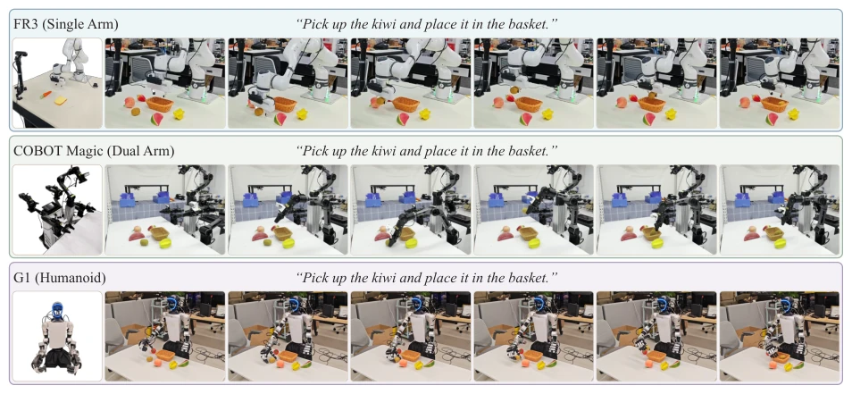

DyPES-VLA 试图解决 VLA 模型在跨机器人本体（Cross-Embodiment）泛化上的痛点，这确实是当前领域从“玩具”走向“通用”的必经之路。作者提出的“共享动力学先验 + 本体特定控制”思路相当巧妙，相当于让模型先学会“物理规律”，再分别穿上不同机器人的“鞋子”。不过，这种架构的复杂度也不容小觑，将未来预测头与动作头解耦，虽然避免了强行统一动作空间的尴尬，但训练两阶段且依赖大量高质量视频数据，工程落地成本不低。此外，虽然仿真成绩亮眼，但真实世界测试中不同形态机器人（如人形 vs 单臂）的表现差异依然明显，说明“通用”二字在物理世界的鸿沟面前，依然需要更多数据来填平。总的来说，这是一次在架构设计上非常“聪明”的尝试，但离真正的“万能机器人”还有距离。
DyPES-VLA attempts to address the pain point of VLA models in cross-robot embodiment (Cross-Embodiment) generalization, which is indeed an inevitable path for the current field to move from "toys" to "general". The idea proposed by the authors of "shared dynamics prior + embodiment-specific control" is quite ingenious, equivalent to letting the model first learn "physical laws" and then put on the "shoes" of different robots respectively. However, the complexity of this architecture should not be underestimated; decoupling the future prediction head and the action head, while avoiding the awkwardness of forcibly unifying the action space, still involves two-stage training and relies on a large amount of high-quality video data, so the engineering deployment cost is not low. Furthermore, although simulation results are bright, the performance difference between different embodiment robots (e.g., humanoid vs. single-arm) in real-world testing remains obvious, indicating that the word "general" still needs more data to fill the gap in front of the chasm of the physical world. Overall, this is a very "smart" attempt in architecture design, but there is still a distance from the real "universal robot".
研究动机Motivation
现有的 Vision-Language-Action (VLA) 模型虽然表现强劲，但大多被绑定在特定机器人本体上，难以跨形态泛化 (Zhang et al., 2025)。当前跨本体 VLA 方法主要存在两大硬伤：一是过度依赖动作标签作为监督信号，导致模型未能充分利用海量无动作标签的人类和机器人视频中蕴含的物体运动、接触等通用动力学规律 (Lyu et al., 2026)；二是为了统一不同机器人的动作空间，往往需要繁琐的人工预处理，如坐标变换或逆运动学映射，这不仅增加了工程负担，还强行将“交互规律”与“本体控制语义”纠缠在一起，导致模型难以适应新的机器人形态 (Yang et al., 2025; Liu et al., 2024)。因此，亟需一种能自动解耦通用动力学知识与特定控制语义的学习范式，无需手动对齐动作空间即可实现跨本体迁移。
Although existing Vision-Language-Action (VLA) models perform strongly, most are bound to specific robot embodiments and struggle to generalize across embodiments (Zhang et al., 2025). Current cross-embodiment VLA methods mainly have two major flaws: first, over-reliance on action labels as supervision signals leads to the model failing to fully utilize the general dynamics laws contained in massive human and robot videos without action labels, such as object motion and contact (Lyu et al., 2026); second, to unify the action spaces of different robots, often tedious manual preprocessing is required, such as coordinate transformation or inverse kinematics mapping, which not only increases engineering burden but also forcibly entangles "interaction laws" with "embodiment control semantics", causing the model to struggle to adapt to new robot embodiments (Yang et al., 2025; Liu et al., 2024). Therefore, a learning paradigm that can automatically decouple general dynamics knowledge and specific control semantics is urgently needed, enabling cross-embodiment transfer without manually aligning action spaces.

Figure 1 We propose a paradigm that learns from het- erogeneous cross-embodiment data. Our DyPES-VLA learns shared dynamics priors and embodiment-specific control. The former is supervised by a future generation head, and the latter is achieved by an MoE action head.
方法Method
DyPES-VLA 采用两阶段训练范式，核心在于构建一个共享的“查询状态”接口来桥接理解与执行。首先，通过预训练的 Vision Language Model (VLM) 将视觉观测、语言指令、本体元数据（如机器人类型、控制频率）以及可学习的 Query Tokens 编码为共享的 Query States (Z)。第一阶段，利用无动作标签的视频数据，通过未来帧预测头（基于 SANA 生成器）对 Z 进行监督，迫使模型在 Query States 中内化物体运动、接触和场景演变的“共享动力学先验”。第二阶段，在动作标注的机器人演示数据上联合优化，保留未来预测头作为正则化项，同时引入本体特定的 Mixture-of-Experts (MoE) 动作头。该动作头基于 Flow-matching DiT 架构，共享注意力层以捕捉通用的时间动作结构，但通过静态路由机制（Static Router）根据本体元数据选择特定的编码器、前馈专家（FFN）和解码器，直接将共享的 Query States 映射回各本体原生的动作空间，彻底摒弃了统一动作格式的需求。推理时仅使用动作头，未来预测头被移除。
DyPES-VLA adopts a two-stage training paradigm, the core of which is to build a shared "Query State" interface to bridge understanding and execution. First, a pre-trained Vision Language Model (VLM) encodes visual observations, language instructions, embodiment metadata (such as robot type, control frequency), and learnable Query Tokens into shared Query States (Z). In the first stage, using video data without action labels, the Query States (Z) are supervised through a future frame prediction head (based on SANA generator), forcing the model to internalize the "shared dynamics prior" of object motion, contact, and scene evolution within the Query States. In the second stage, joint optimization is performed on action-annotated robot demonstration data, retaining the future prediction head as a regularization term, while introducing embodiment-specific Mixture-of-Experts (MoE) action heads. This action head is based on the Flow-matching DiT architecture, sharing attention layers to capture general temporal action structures, but selects specific encoders, feed-forward experts (FFN), and decoders via a static routing mechanism (Static Router) based on embodiment metadata, directly mapping the shared Query States back to each embodiment's native action space, completely abandoning the need for unified action formats. During inference, only the action head is used, and the future prediction head is removed.

Figure 2 Overview of our DyPES-VLA. (a) A pretrained Vision Language Model maps observations, instructions, embodiment metadata, and learnable query tokens into query states that carry the shared dynamics priors. A future generation head predicts the future frame from these states, and an embodiment-specific Mixture-of-Experts (MoE) action head decodes them into actions in each embodiment’s native action space. The action head shares attention layers across embodiments, while a static router selects the embodiment-specific encoder, feed-forward expert, and decoder. (b) Two-stage training: Dynamics Priors Pretraining on action-free videos, followed by Cross-Embodiment Co-Training on action-labeled robot demonstrations.
The study was evaluated on three simulation benchmarks (LIBERO, RoboTwin 2.0, and RoboCasa-GR1) and three real physical robots (single-arm, dual-arm, humanoid). Under a single checkpoint setting, DyPES-VLA achieved 98.0% success rate on LIBERO, 89.02% on RoboTwin 2.0, and 59.25% on RoboCasa-GR1, all outperforming or matching the strongest baselines such as Qwen-VLA. In real-world experiments, the unified strategy after joint fine-tuning achieved an average success rate of 75.6% across three tasks, significantly outperforming ACT (32.4%) and GR00T-N1.6 (59.6%). Ablation studies confirmed: removing future prediction supervision leads to a significant performance drop (e.g., RoboTwin 2.0 drops 2.4 points), proving the importance of the dynamics prior; replacing the MoE head with a shared dense head also causes significant loss, verifying the necessity of embodiment-specific control heads. Additionally, linear probe tests show that future prediction significantly improves the model's decoding capability for contact onset and release.

Figure 3 Real-world rollouts of our DyPES-VLA using a single checkpoint jointly finetuned on demonstrations from three physical embodiments with distinct morphologies. Each row shows the hardware setup followed by six keyframes (left to right) of one representative task per platform: an FR3 single-arm robot (top), a COBOT Magic dual-arm robot (middle), and a G1 humanoid (bottom).